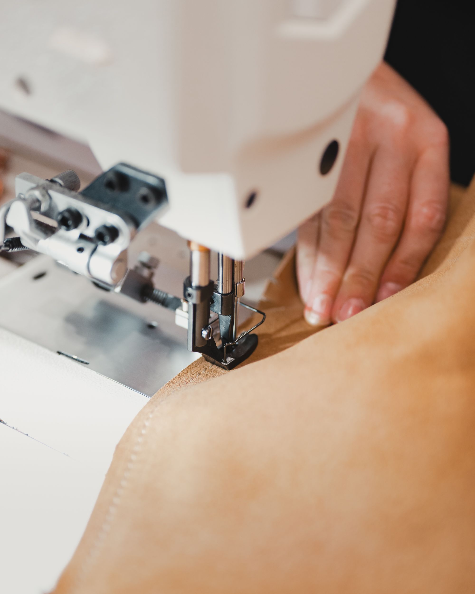

THE FUTURE IS USUALLY BORING

boring things:
THICKER FABRIC
STRONGER STITCHING
A HINGE THAT JUST WORKS
A BATTERY YOU CAN REPLACE
A NORMAL SCREW, NOT A SECRET HANDSHAKE
A SPARE PART THAT STILL EXISTS
NOBODY BRAGS ABOUT THIS
...they're already repairing a printer

people see: SHAPE · COLOR · PRICE · TOMORROW
EASY TO HIDE
still looks complete
LESS FUTURE BUILT IN